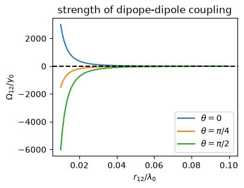
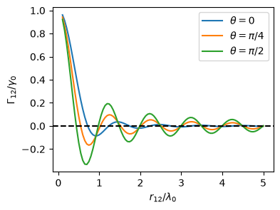

7.1. Optical quantum master equations#
7.1.1. Full Hamiltonian#
In order to investigate the optical properties of emitters, we need a Hamiltonian consisting of three parts, \(H_{S}\) for the system of emitters, \(H_{R}\) for the radiation field, and $H_{SR} for the coupling between them. They are already introduced in Chapter 5.1, Chapter 5.2}, and Chapter 5.3.
Formally, we are supposed to solve the Liouville-von Neumann equation \(\rho_{SR} = -i \left[H_{S}+H_{R}+H_{SR},\rho_{SR}\right]\) but it is mathematically quite demanding. Hence, we need some approximations.
There are two effects of the interaction with the radiation field on the emitters. One is the energy shift including the Lamb shift and the dipole-dipole coupling, which is the real part of the self energy. The other is the dissipation which arises from the imaginary part of the self energy. The result of the approximation is given below.
7.1.2. Quantum master equation: A general form#
If the interaction between the system and the radiation field is weak, we can use the perturbation theory (the Born approximation). We also assume the radiation field goes back to the thermal equilibrium instantly after a photon is emitted. (Markovian approximation). Furthermore, we adopt the rotating wave approximation With these approximation, we can calculate the evolution of the emitters and the radiation field separately. For the emitters, the evolution of the reduced density \(\rho\) for the emitters is determined by the quantum master equation, which is also known as the Lindblad equation \(\frac{d}{dt}\rho = \mathcal{L} (\rho)\) where \(\mathcal{L}\) is the Liouvillian superoperator which consists of two parts, a unitary part (also called coherent part) and dissipator:
The first term in the right hand side is the unitary part, which includes additional Hamiltonian \(H^\prime_{S}\). The second term is the dissipator expressed as a super operator which takes a general form:
where the anticommutator \(\{A,B\} = AB + BA\) is used. The operator \(L_{j}\) is known as Lindblad operator and \(\gamma\) is the rate of dissipation. It is a common practice to use \(C = \sqrt{\gamma_{j}} L_{j}\) in numerical approach, which is known as collapse operator or jump operator. With the collapse operators, the master equation is written as
There can be several different dissipators in a single quantum master equation.
The specific expression of the dissipator depends on the Hamiltonian \(H_{S}\).
7.1.3. Optical master equation#
As introduced in Chapter 5.1, Chapter 5.2, and Chapter 5.3, the Hamiltonian of the whole system is given by \(H=H_{0}+H_{R}+H_{SR}\), we obtain the quantum master equation for the emitters coupled to the radiation field as
with the Lamb shift \(H_\text{Lamb}\) and the dipole-dipole interaction
The Lamb shift diverges in the non-relativistic quantum mechanics. The renormalization of electron mass and charge in QFT resolves this issue. It turns out that the shift is very small and thus we shall ignore it.
The microscopic derivation of the quantum master equation finds the following dissipator:
where \(N_T = \frac{1}{e^{\omega_0/T - 1}}\) is the mean thermal photon number at temperature \(T\). The first term in the right hand side corresponds to the emission and the second term to the absorption.
From the perspective of the dissipators, \(\sigma^{\pm}_{j}\) represents an optical transition in the \(j\)-th emitter. The diagonal terms with \(\Gamma_{jj}\) correspond to emission or absorption taking place in the \(j\)-th emitter. The cross terms with \(\Gamma_{i\ne j}\) correspond to the interference between transitions in the \(i\)- and \(j\)-th emitters. However, we must be careful about this kind of interpretation. The operator \(\sigma^{\pm}_{j}\) describes the transition between two basis states \(|g\rangle\) and \(e\rangle\) but not necessarily between two energy eigenstates of the system. The problem is that the expression of a disspator is not unique as shown in Chapter 7.1.7. We must pick one that fits to the actual physics.
It is important to mention that the quantum master equation is an approximation. It not always gives a correct answer. Its blind use is dangerous. For example, if wrong collapse operators are used, the system does not reach a correct thermal state or we could get wrong optical processes. The bottom line is that the dissipator must be consistent with the physical processes under the investigation. We shall be careful about it.
7.1.4. Dipole-diploe coupling#
The coefficient of the H\(_{dd}\) (7.4) is given by
where \(\theta_{ij}\) is the angle betwen \(\mathbf{d}\) and \(\mathbf{r}_{ij}\) and the rate of spontaneous emission at zero temperature is defined by
\(\Omega_{ij}\) diverges as \(r_{ij} \rightarrow 0\) by the same as the dirvergence of the Lamb shift. We cannot the dipole-dipole interaction when the two emitters are too close.
The main role of this coupling is to shift the energy eigenvalue of the emitters. Without the \(H_{dd}\), the spectra of \(H_{S}\) is \(E_{ee}=\omega_0\), \(E_{eg}=E_{ge}=0\), and \(E_{gg}=-\omega_0\), and the corresponding eigenvectors are just the product basis kets. When \(H_{dd}\) is added, the degeneracy is lifted and the new energy eigenvalues are \(E_{e} = \omega_{0}\), \(E_{s} = \Omega_{12}\), \(E_{a} = - \Omega_{12}\) and \(E_{g} = -\Omega_{0}\). The corresponding eigenstates are \(|e\rangle = |ee\rangle\), \(|s\rangle = (|eg\rangle + |ge\rangle)/\sqrt{2}\), \(|a\rangle = (|eg\rangle - |ge\rangle)/\sqrt{2}\) and \(|g\rangle = |ee\rangle\). Hence, the optical transitions take place between these states and the collapse operators in the dissipator must be consistent with them. Or otherwise we will get wrong physics.
Figure: Strength of the dipole-dipole coupling.
The following code plots the strength of the dipole-dipole coupling. It is smaller than \(\gamma_0\) except for \(r_{12} \ll \lambda_{0}\). Hence, it does not play a significant role in realistic applications.
import numpy as np
import matplotlib.pyplot as plt
def f(x,theta):
y=(1-np.cos(theta)**2)*np.cos(x)/x + (1-3*np.sin(theta)**2)*(np.sin(x)/x**2 - np.cos(x)/x**3)
return -y*3/4
x0=np.linspace(0.01,0.1,100)
x1=2*np.pi*x0
y1 = f(x1,0)
y2 = f(x1,np.pi/4)
y3 = f(x1,np.pi/2)
plt.figure(figsize=(4,3))
plt.title("strength of dipope-dipole coupling")
plt.plot(x0,y1,label=r"$\theta=0$")
plt.plot(x0,y2,label=r"$\theta=\pi/4$")
plt.plot(x0,y3,label=r"$\theta=\pi/2$")
plt.xlabel(r"$r_{12}/\lambda_{0}$")
plt.ylabel(r"$\Omega_{12}/\gamma_{0}$")
plt.axhline(y=0, color='k', linestyle='--')
plt.legend(loc=4)
plt.show()

There is a big problem with the above formula. As the separation of two emitters vanishes, \(\Omega_{12}\) diverges. Equation (7.6) is derived under the assumption that the emitter is a point particle, which causes the divergence. Using a finite size of radius \(a\), the following formula avoid the divergence near \(r_{12} \sim 0\):
7.1.5. Decay rates#
The diagonal coefficients in the dissipator (7.5) are simply \(\Gamma_{ii} = \gamma_{0}\) and the off-diagonal coefficients are defined by
As the following plot indicates, \(Gamma_{12}\) vanishes when \(r_{ij}/\lambda_{0} \gg 1\) and approaches \(\gaam_0\) when \(r_{ij}/\lambda_{0} \ll 1\), where \(\lambda_{0} = 2\pi/k_{0} = 2 \pi c/\omega_0\).
Figure: \(\Gamma_{12}\) as a function of distance.
The following code plots \(\Gamma_{i\ne j}\) as the function of \(r_{ij}/\lambda_{0}\). The plot clearly shows that as \(r_{ij} \rightarrow 0\), \(\Gamma_{i\ne j} \rightarrow \gamma_0\), which indicates that when the radiation field cannot distinguish the emitters, all the coefficients are just \(\gamma_0\). On the other hand, if \(r_{ij} \gg \lambda_0\), \(\Gamma_{i\ne j} \approx 0\), which indicate that the cross correlation between the emitters \(i\) and \(j\) vanishes. In conclusion, the indistinguishability of emitters by the radiation field is reflected in \(\Gamma_{ij}\).
import numpy as np
import matplotlib.pyplot as plt
def f(x,theta):
y=(1-np.cos(theta)**2)*np.sin(x)/x + (1-3*np.cos(theta)**2)*(np.cos(x)/x**2 - np.sin(x)/x**3)
return y*3/2
x0=np.linspace(0.1,5,100)
x1=2*np.pi*x0
y1 = f(x1,0)
y2 = f(x1,np.pi/4)
y3 = f(x1,np.pi/2)
plt.figure(figsize=(4,3))
plt.plot(x0,y1,label=r"$\theta=0$")
plt.plot(x0,y2,label=r"$\theta=\pi/4$")
plt.plot(x0,y3,label=r"$\theta=\pi/2$")
plt.xlabel(r"$r_{12}/\lambda_{0}$")
plt.ylabel(r"$\Gamma_{12}/\gamma_{0}$")
plt.axhline(y=0, color='k', linestyle='--')
plt.legend(loc=1)
plt.show()

7.1.6. Phonon scattering#
Interaction with phonon may cause a significant impact on coherence for quantum dots. The quantum master equation acuires additional terms from the interaction Hamiltonian (5.17). First, there is a new dissipator
which could play a significant role in decoherence. We will see if this dissipation has some impact on coherency in applications.
Secondly, a new coupling Hamiltonian shows up:
with the coupling strength is given by
where \(\omega_\mathbf{q}\) is the energy of phonon with momentum \(\mathbf{q}\).
Since this term commutes with \(H_{0}\), no energy exchange is involved. They expected to induce pure dephasing. However, it seems that the effect of dephasing is not significant in many applications since competing couplings such as quantum tunneling is stronger.
7.1.7. Ambiguity#
The expression of a quantum master equation is not unique. It is invariant under many transformation. Suppose that the dissipator is given by
Introducing a set of new operators using a unitary transformation \(U\) such that \(B_{j} = \sum_{k} U_{jk} A_{k}\), the dispator is transformed to
Even under a simple shift \(B_{j} = A_{j} + \alpha_{j}\) where \(\alpha_{j}\) is a constant, the dissipator is invariant. Hence, there are infinitely many expression of the same quantum master equation.
Example
Consider the following dissipator:
We introduce introducing new operators:
This transformation does not change \(H_{S}\). The original dissipator is transformed to
Notice that there is no cross terms between \(\eta^{\pm}_{1}\) and \(\eta^{\mp}_{2}\). We just diagonalized \(\Gamma_{ij}\) and \(\Gamma_{11}\pm \Gamma_{12}\) are the eigenvalues of the matrix. An interesting situation arises when the distance between the two emitters is small. As \(r_{12}\) vanishes, \(\Gamma_{12} \rightarrow \Gamma_{11}\) and thus the second term in (7.9) vanishes. At the same time the decay rate of the first term is doubled. This is the mechanism of superradiant which we discuss later.
The dissipator (7.9) has a slight computational advantage.
Although the expression changed, the density operator is invariant under the transformation. So, if we are interested in only the state of the emitter, there seems no problem. The expectation value of any observabale in the emitter’s Hilbert space is indeed invariant. While mathematically the two dissipators (7.8) and (7.9) are equivalent, they use different collapse operators, which has different physical interpretation.[1] The collapse operator \(\sigma^{-}_{j}\) describes the transition from \(|e\rangle\) to \(|g\rangle\) in the \(j\)-th emitter. On the other hand, \(\eta^{-}_{j}\) represents collective deexcitation involving both emitters. Which one is better? From the perspective of the emitters it does not matter. However, the radiation field sees them differently. When we trace out the radiation field to obtain the quantum master equation, the communication between the emitters and the radiation field is lost, which seems the origin of the ambiguity in the quantum master equation. We will find out more details when we discuss the perspective of the radiation field.